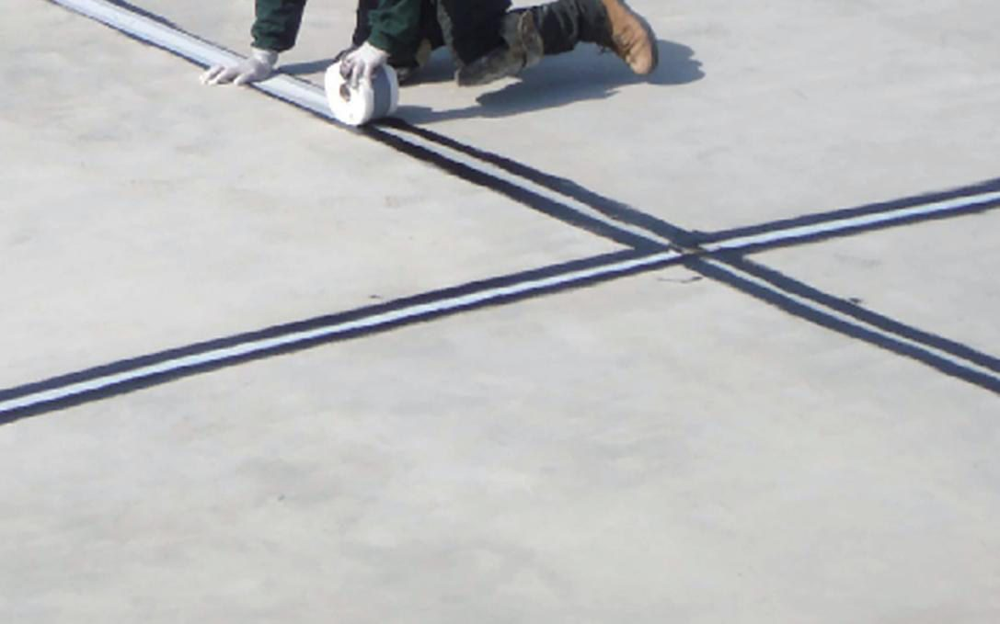

Tin của Thiên Khôi. Ngắn gọn, ghi rõ ngày và việc.
Ra mắt dịch vụ, tài liệu mới, hàng mẫu, công trình.

Thiên Khôi ra mắt mảng Giải Pháp An Toàn cho nhà máy, kho miền Bắc
Rào chắn polymer, bảo vệ kệ và cột, băng dán sàn an toàn. Khảo sát tại chỗ ở các KCN phía Bắc, do anh Lê Huy Vương phụ trách.
Đọc tin
3 bài mới: sơn hay băng dán, bảng màu vạch sàn, tách lối đi bộ và xe nâng
Viết cho quản lý kho, HSE: trả lời thẳng câu hỏi, nêu giới hạn từng cách, có bảng chọn nhanh.
Đọc tin
Mở trang Hỏi đáp: câu khách hay hỏi trước khi khảo sát
Gom theo nhóm rào chắn, băng dán sàn, khảo sát và lắp đặt. Mỗi câu dẫn sang trang chuyên đề.
Đọc tin
Checklist tự kiểm kho 10 điểm dùng ngay trên web
Đi một vòng kho trong 15 phút, đánh dấu từng điểm, xem kết quả và việc nên làm trước.
Đọc tinTin của Thiên Khôi về mảng an toàn: dòng sản phẩm mới, bài kiến thức, công cụ trên web. Công trình chỉ đăng khi khách đồng ý bằng văn bản.
Trang tin đăng gì, đăng khi nào
Trang này chỉ đăng việc đã xảy ra, có ngày, có người chịu trách nhiệm. Không đăng tin cho đủ lịch.
Bốn loại tin
Mỗi tin gắn một nhãn để anh chị lướt nhanh tới loại tin mình cần.
- Công ty: mảng mới, dòng sản phẩm mới, người phụ trách mới, khu vực khảo sát mở rộng
- Tài liệu: checklist, bảng màu, catalogue mới nhận được ở trang tài liệu
- Hàng mẫu: khi có hàng mẫu để anh chị xem tận tay trước khi chọn
- Công trình: ảnh trước và sau tại một nhà máy, kho, chỉ khi khách đồng ý bằng văn bản
Nhịp đăng
Tin không có lịch cố định. Có việc thật thì đăng, không có thì thôi. Một tin chỉ lên trang khi việc đã xong: tài liệu đã gửi được, hàng mẫu đã về kho, công trình đã bàn giao.
Bài về xe nâng, rào chắn, băng dán sàn có nhịp riêng ở trang Kiến thức. Tin nói việc của Thiên Khôi, còn bài kiến thức nói chuyện trong kho của anh chị.
Tin công trình: chỉ đăng khi khách đồng ý bằng văn bản
Ảnh kho, tên nhà máy, vị trí KCN đều là thông tin của khách. Thiên Khôi chỉ đăng tin công trình khi khách đồng ý bằng văn bản, và chỉ đăng đúng phần đã được đồng ý. Có khi tin chỉ có ảnh một đoạn rào, không có tên công ty.
Không dựng chuyện khách, không lấy ảnh minh hoạ rồi gọi là công trình. Ảnh, video sản phẩm do nhà sản xuất cung cấp luôn ghi nguồn "Ảnh: nhà sản xuất". Ảnh anh chị gửi khi đặt khảo sát cũng theo đúng nguyên tắc này, xem chính sách bảo mật.
Một tin gồm những gì
Mỗi tin có ngày đăng, nhãn loại tin, một đoạn nói việc gì đã xảy ra, việc đó giúp gì cho nhà máy, kho, và ai là người liên hệ. Tin không có lời tự khen hay câu quảng cáo, cũng không nêu giá. Tin có số liệu kỹ thuật thì ghi nguồn ngay dưới tin.
Cần việc gấp thì không phải đợi tin
Trang tin cập nhật khi có việc. Kho đang có chỗ hay va, hay trơn thì gửi ảnh qua trang đặt khảo sát, hoặc gọi, nhắn Zalo 0948 922 368. Muốn tự xem trước, đi một vòng kho theo checklist 10 điểm.
Vì sao trang tin ít tin?
Vì trang chỉ đăng việc đã xảy ra, không đăng cho đủ lịch. Mảng Giải Pháp An Toàn ra mắt ngày 09/11/2026, tin sẽ thêm dần khi có tài liệu mới, hàng mẫu, hay công trình được khách đồng ý đăng. Muốn đọc đều hơn thì vào trang Kiến thức, nơi có bài về xe nâng, rào chắn, băng dán sàn.
Nhà máy tôi muốn đăng công trình lên trang tin thì làm thế nào?
Báo cho anh Lê Huy Vương khi bàn giao. Hai bên thống nhất bằng văn bản phần được đăng: ảnh nào, có ghi tên công ty và KCN hay không. Thiên Khôi gửi bản nháp tin để anh chị xem trước khi đăng. Không có văn bản đồng ý thì không đăng, kể cả ảnh không thấy tên công ty. Liên hệ qua trang đặt khảo sát.
Muốn gỡ một tin có ảnh nhà máy của tôi thì làm sao?
Gọi hoặc nhắn Zalo 0948 922 368, hoặc email sales01@datrangyenbai.com, nói rõ tin nào và phần nào cần gỡ. Đồng ý đăng có thể rút lại. Khi đó Thiên Khôi gỡ ảnh hoặc gỡ cả tin khỏi trang. Cách Thiên Khôi giữ thông tin của khách ghi ở chính sách bảo mật.
Tin về dòng sản phẩm mới có kèm thông số không?
Chỉ kèm thông số có nguồn từ tài liệu của nhà sản xuất, và nguồn ghi ngay dưới tin. Thiên Khôi chỉ thêm dòng mới khi đã có hàng, thông số có nguồn và video thử. Thông số chưa có nguồn thì không đăng. Các dòng đang có xem ở trang sản phẩm.
Tin tiếng Anh có giống tin tiếng Việt không?
Có. Mỗi tin có bản tiếng Việt và bản tiếng Anh cùng nội dung, để quản lý người nước ngoài trong nhà máy đọc được. Ở bản tiếng Anh, kênh nhắn tin chính là WhatsApp. Muốn biết ai đứng sau trang tin này, xem trang Về Thiên Khôi.